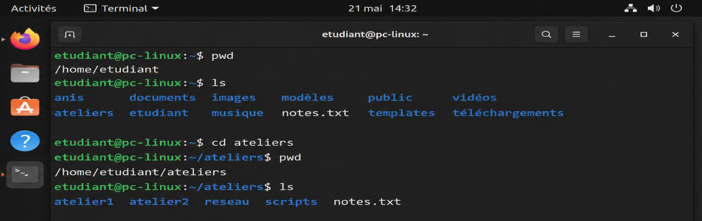
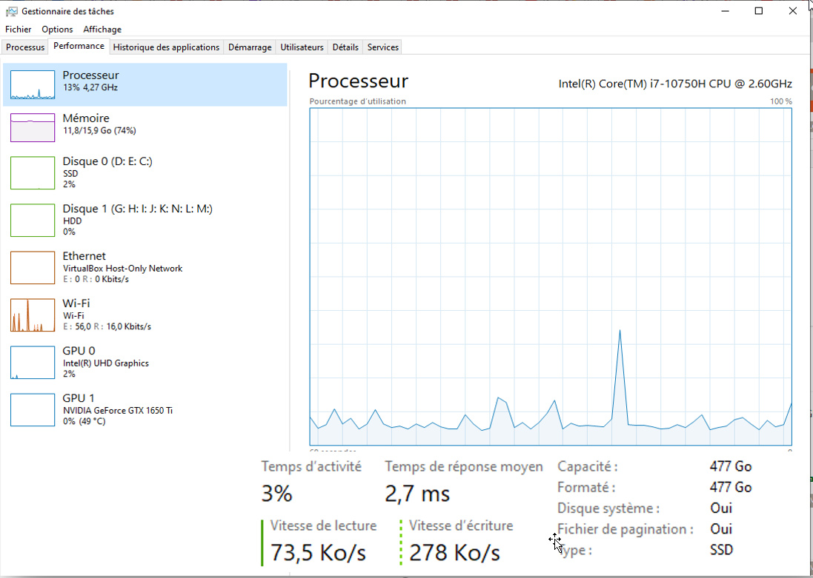
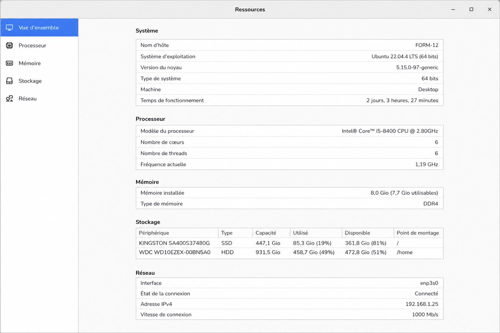

EXAMEN FINAL(40%)
| PRÉNOM ET NOM : | DATE : | ||
| N° D’ÉTUDIANT(E) : | GROUPE : |
| Durée de l’examen | 2h00 |
|---|---|
| Nombre de pages | Version web formulaire — 12 pages incluant celle-ci |
| Publication | LÉA-Travaux > Évaluations — Examen final installation hiver 2026 |
| Modalités de l’évaluation | Évaluation théorique, individuelle et sur formulaire web sécurisé. L’étudiant doit inscrire clairement son nom, son prénom et toute autre information demandée. Les réponses doivent être rédigées directement dans ce formulaire. La qualité du français écrit peut être prise en compte dans la correction. Pour plus de détails, référez-vous au plan de cours. |
|---|---|
| Matériel autorisé | Notes personnelles de l’étudiant autorisées. Tout autre matériel explicitement autorisé par l’enseignant. |
| Règles et matériel interdit | L’étudiant doit travailler seul, en silence, et respecter les consignes de l’enseignant. Toute communication avec un autre étudiant est interdite. Toute consultation de ressources non autorisées est interdite. Toute aide extérieure est interdite. Matériel interdit : téléphone cellulaire, tablette électronique, ordinateur portable non autorisé, montre intelligente, écouteurs, outils d’intelligence artificielle incluant ChatGPT, applications de communication comme WhatsApp ou Messenger, échange ou prêt de matériel entre étudiants. |
| Total | / 100 |
Identité validée : Identité non validée
Code d’accès : Code non validé
Heure d’activation : Heure non validée
ID de session : Session non validée
Empreinte de vérification : Empreinte non validée
Source : Source non validée
Export final : Export final non effectué
État : Copie non verrouillée
Empreinte de copie finale : Empreinte non générée
La médiathèque reçoit quelques postes qui doivent être préparés avant leur utilisation dans les ateliers. Certains postes sont neufs, d'autres ont déjà été utilisés. Vous devez reconnaître les opérations nécessaires avant l'installation et après l'installation du système.
La médiathèque reçoit quelques postes qui doivent être préparés avant leur utilisation dans les ateliers. Certains postes sont neufs, d'autres ont déjà été utilisés. Vous devez reconnaître les opérations nécessaires avant l'installation et après l'installation du système.

Votre responsable vous remet des captures provenant du Gestionnaire des tâches et de la Gestion des disques. Vous devez interpréter les valeurs affichées afin de vérifier l'état général du poste.

Après l’analyse initiale du poste FORM-12, votre responsable vous demande de vérifier si ce poste est bien adapté aux ateliers de création numérique de la médiathèque.
Les participants devront consulter des ressources en ligne, travailler sur des documents, utiliser des applications de création visuelle, conserver des fichiers volumineux et ouvrir occasionnellement des machines virtuelles.
La responsable signale que le poste devient parfois lent lorsque plusieurs tâches sont réalisées en même temps. Vous devez donc analyser la situation, proposer des améliorations pertinentes, vérifier les raccordements et tenir compte du confort d’utilisation avant la remise du poste aux participants.

Consigne :
Complétez chaque espace vide avec le terme technique approprié dans ce dialogue.
Nadia :
Le poste FORM-12 devient lent lorsque les participants ouvrent plusieurs applications en même temps. Avant de proposer une solution, je veux vérifier si la quantité de est suffisante.
Alain :
Oui, c’est une bonne piste. Si la mémoire est trop limitée, l’ordinateur peut ralentir dès que plusieurs logiciels sont utilisés en même temps.
Nadia :
Je pense aussi que le problème peut venir du car il exécute les calculs principaux de l’ordinateur.
Alain :
C’est possible, mais il ne faut pas conclure trop vite car même avec un cerveau correct dans un ordinateur, cela peut quand même donner un poste lent si le disque principal est un ancien disque de type
Nadia :
Donc, si le poste utilise encore un disque mécanique, il serait préférable de remplacer ce disque par un pour améliorer le démarrage et l’ouverture des applications.
Alain :
Exactement. Ce type de disque rendrait le poste beaucoup plus réactif, surtout si le bon et les logiciels principaux sont installés dessus.
Alain :
Cependant, je pensais qu’on pourrait simplement augmenter la pour accélérer l’ordinateur.
Nadia :
Non, ce n’est pas la bonne solution. Cette mémoire sert surtout au démarrage de base de la machine. Pour améliorer les performances, il faut plutôt agir sur la mémoire vive et le disque de stockage.
Alain :
D’accord. Il faudra aussi vérifier que la accepte l’ajout de mémoire et le remplacement du disque par un disque complètement électronique compatible.
Nadia :
Oui. Et si les participants conservent beaucoup de fichiers, il faudra aussi surveiller l’ disponible pour éviter que le poste ralentisse à nouveau.
Alain :
La peut aussi être utile pour certains logiciels de création graphique, mais dans notre cas, la priorité reste la mémoire et le stockage.
Nadia :
Je suis d’accord. Il faut aussi vérifier la pour éviter la surchauffe après l’ajout ou le remplacement de composants.
Alain :
Et la doit être fonctionnelle pour accéder aux fichiers partagés, à Internet et à l’imprimante réseau de la médiathèque.
Nadia :
Donc, la solution la plus rentable n’est pas de remplacer tout l’ordinateur. Il faut augmenter la et remplacer le disque principal par un
Alain :
Oui. Cette solution répond au besoin : le poste sera plus rapide, plus stable et mieux adapté aux ateliers numériques.
Après l’échange entre Nadia et Alain, votre responsable vous demande de justifier la solution proposée avant d’autoriser l’achat des composants nécessaires.
Consigne :
Rédigez un paragraphe clair dans lequel vous devez :
- Expliquer le problème observé sur le poste ;
- Nommer les composants à acheter ou à remplacer ;
- Justifier l’utilité de ces composants ;
- Expliquer pourquoi cette solution est plus rentable que l’achat d’un nouvel ordinateur.
Barème de correction objectif : Section A, B1, B2 (60 points)
| Partie | Éléments évalués | Répartition précise | Note |
|---|---|---|---|
| Section A | Installer le système d’exploitation | Q1 2 pts; Q2 2 pts; Q3 3 pts; Q4 3 pts; Q5 2 pts; Q6 3 pts | /15 |
| Section B1 | Organisation du système de fichiers, comptes utilisateurs et droits d’accès | Q7 2 pts; Q8 2 pts; Q9 3 pts; Q10 2 pts; Q11 3 pts; Q12 3 pts; Q13 4 pts; Q14 3 pts; Q15 4 pts; Q16 4 pts | /30 |
| Section B2 | Gestion des ressources système et notions matérielles | Q17 à Q21 : 3 pts chacun | /15 |
| Total du barème objectif | /60 | ||
Grille d’évaluation critériée — Section C : Préparer l’ordinateur (40 points)
| Compétence 1 : Analyser la demande et les spécifications du poste (10 points) | ||||||
|---|---|---|---|---|---|---|
| Critère d’évaluation | Maîtrise très insuffisante | Maîtrise faible | Maîtrise acceptable | Maîtrise bonne | Maîtrise très bonne | Note |
| Analyse du poste FORM-12 et identification du besoin. Critères visés : 1.1 interprétation juste de la demande; 1.2 interprétation juste des spécifications. | Analyse absente ou hors sujet; le problème du poste n’est pas reconnu. | Analyse très partielle; plusieurs besoins ou contraintes techniques sont ignorés. | Analyse acceptable; le ralentissement et quelques besoins sont reconnus. | Analyse claire; les besoins, limites et contraintes principales sont bien interprétés. | Analyse rigoureuse; demande, contexte, usages et contraintes sont reliés avec précision. | |
| 0 | 3 | 5 | 8 | 10 | ||
| Note de compétence | /10 | |||||
| Compétence 2 : Identifier les composants et les améliorations pertinentes (12 points) | ||||||
|---|---|---|---|---|---|---|
| Critère d’évaluation | Maîtrise très insuffisante | Maîtrise faible | Maîtrise acceptable | Maîtrise bonne | Maîtrise très bonne | Note |
| Dialogue technique : RAM, processeur, HDD, SSD, carte mère, espace disque et composants utiles. Critères visés : 1.2 spécifications de l’équipement; 1.3 ajout correct de composants amovibles. | Réponses majoritairement incorrectes; composants confondus ou mal nommés. | Identification faible; plusieurs termes essentiels sont absents ou imprécis. | Identification suffisante; les composants principaux sont reconnus avec quelques erreurs. | Identification solide; la plupart des composants et améliorations sont bien associés. | Identification très précise; composants, rôle et améliorations sont cohérents et complets. | |
| 0 | 3 | 6 | 9 | 12 | ||
| Note de compétence | /12 | |||||
| Compétence 3 : Vérifier les périphériques, raccordements et conditions d’utilisation (8 points) | ||||||
|---|---|---|---|---|---|---|
| Critère d’évaluation | Maîtrise très insuffisante | Maîtrise faible | Maîtrise acceptable | Maîtrise bonne | Maîtrise très bonne | Note |
| Vérifications liées à la carte réseau, à la ventilation et au confort d’utilisation. Critères visés : 1.4 raccordement correct des périphériques; 1.5 positionnement ergonomique. | Vérifications absentes ou sans lien avec l’utilisation réelle du poste. | Vérifications limitées; réseau, ventilation ou ergonomie sont peu considérés. | Vérifications acceptables; quelques éléments utiles sont mentionnés. | Vérifications pertinentes; les principaux aspects matériels et d’usage sont couverts. | Vérifications complètes; réseau, ventilation, confort et usage sont clairement intégrés. | |
| 0 | 2 | 4 | 6 | 8 | ||
| Note de compétence | /8 | |||||
| Compétence 4 : Justifier une solution technique adaptée et rentable (10 points) | ||||||
|---|---|---|---|---|---|---|
| Critère d’évaluation | Maîtrise très insuffisante | Maîtrise faible | Maîtrise acceptable | Maîtrise bonne | Maîtrise très bonne | Note |
| Court rapport : problème, composants à acheter ou remplacer, utilité et rentabilité. Critères visés : 1.1 demande; 1.2 spécifications; 4.5 gestions des processus, mémoire et espace disque. | Justification absente, confuse ou sans solution technique exploitable. | Justification faible; solution peu claire, incomplète ou mal reliée au problème. | Justification acceptable; solution compréhensible, mais arguments limités. | Justification claire; solution pertinente, composants nommés et utilité expliquée. | Justification convaincante; problème, choix techniques, effets attendus et rentabilité sont bien reliés. | |
| 0 | 3 | 5 | 8 | 10 | ||
| Note de compétence | /10 | |||||
| Total de la grille d’évaluation — Section C | /40 | |||||
| Total général de l’examen | /100 | |||||
- Aucune sortie du plein écran enregistrée.